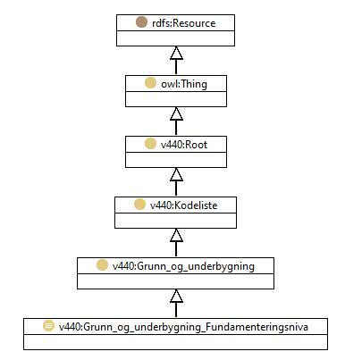

http://rdf.vegdata.no/v440-owl#Grunn_og_underbygning_Fundamenteringsniva
Class v440:Grunn_og_underbygning_Fundamenteringsniva

v440:avsnitt
V-8.1
v440:kapitel
V-8
v440:kode
-
rdf:type
owl:Class
rdfs:label
Fundamenteringsnivå
rdfs:subClassOf
v440:Grunn_og_underbygning
Instances
v440:Grunn_og_underbygning_Fundamenteringsniva_0-5_m_vanndybde
,
v440:Grunn_og_underbygning_Fundamenteringsniva_10-20_m_vanndybde
,
v440:Grunn_og_underbygning_Fundamenteringsniva_5-10_m_vanndybde
,
v440:Grunn_og_underbygning_Fundamenteringsniva_Annet_fundamenteringsniva
,
v440:Grunn_og_underbygning_Fundamenteringsniva_Over_vann
,
v440:Grunn_og_underbygning_Fundamenteringsniva_storre_enn_20_m_vanndybde
References
as rdfs:range (
v440bd:harFundamenteringsniva
)
Generated with
TopBraid Composer
by
TopQuadrant, Inc.